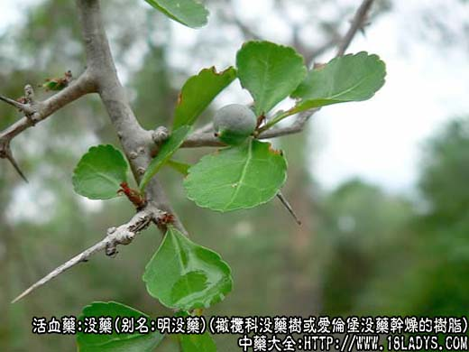
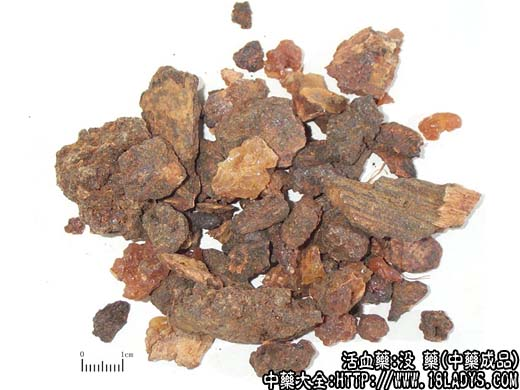
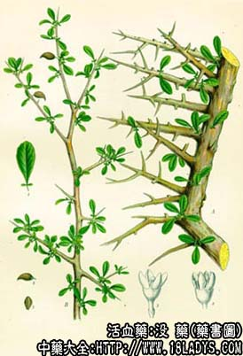

没药为常用中药。始载《开宝本草》。
别名：明没药，末药。
来源：为橄榄科植物没药树，或爱伦堡没药（产地名哈迪树）干燥的树脂。在商品上前者称天然没药，后者称胶质没药。野生或栽培。
产地：主产于非洲东北部索马里、埃塞俄比亚等地。
性状鉴别：1、天然没药：呈不规则颗粒状或粘结成团块，大小不一，一般直径2.5厘米，有的可达10厘米，黄棕色（日久变为红棕色），有的含有杂质粘有树皮，显黑棕色，有时杂有淡黄白色透明的卵状胶质块。表面粗糙。覆有粉尘。质坚脆。破碎面呈不规则颗粒状，带有棕色油样光泽（似琥珀）。与水共研则形成黄色乳汁状。有特异芳香，味苦而微辛。
以块大，黄棕色，香气浓而杂质少者为佳。
2、胶质没药：呈不规则块状，有粘性，多数集成团，大小不等，但较天然没药块大，呈深棕色或灰黑色，表面粗糙。质坚硬。破碎面不整齐，有油质光泽。有刺鼻辛辣气，味苦。
以色棕红，杂质少，辛辣气浓者为佳，习惯认为天然没药优于胶质没药。
主要成分：含树脂、挥发油、树胶等。
功效与作用：活血散瘀镇痛。外用有收敛和消炎作用。此外，对多种皮肤癣菌有不同程度的抑制作用。在1:3000~1：300浓度下能抑制结核菌。
炮制：醋炒。
性味：苦、辛、平。
归经：入肝经。
功能：散血止痛，消肿生肌。
主治：痈疽肿痛，心腹、筋骨诸痛，损伤血，外用可敛疮生肌。
临床应用：基本上与乳香相同，且两者常同用。例如治跌打损伤、关节肿痛的没药丸，就是乳香、没药同用，配桃仁、当归、赤芍、自然铜等。乳香、没药的区别在于：1、乳香在祛瘀之中，又能活络；没药则活血行瘀之力较好，没药酊外用可治口腔炎，牙龈炎、咽炎等；2、前人谓乳香活血、没药散血，其实活血和散血都是相当于祛瘀止痛的作用，不必拘泥细分。
孕妇和月经过多者慎用。
用量：3~12g，大剂可用至15g。
处方举例：没药丸（《证治准绳》）：没药15g，乳香15g，当归15g，赤芍15g，川芎15g，川椒15g，桃仁30g（杵泥），煅自然铜7.5g，共研强末，用黄蜡60g，溶化入药末为丸，丸似弹子大小，每服1丸，治跌打损伤。
注：没药树除索马里，埃寒俄比亚主产外，其他非洲国家如阿拉伯、也门等地亦有分布。由于树的品种不同，其树脂气味和性状亦有差异。过去大部分由亚丁输出，经印度再转到香港，经加工分档后运销我国，分为明没药、全没药、克香、狗皮没药等名称。现在由原产地直接进口，主要为正文所述的两个品种，即过去市场上习销质量最好的明没药和全没药。其他如狗皮没药等因质量太次，已不再进口。